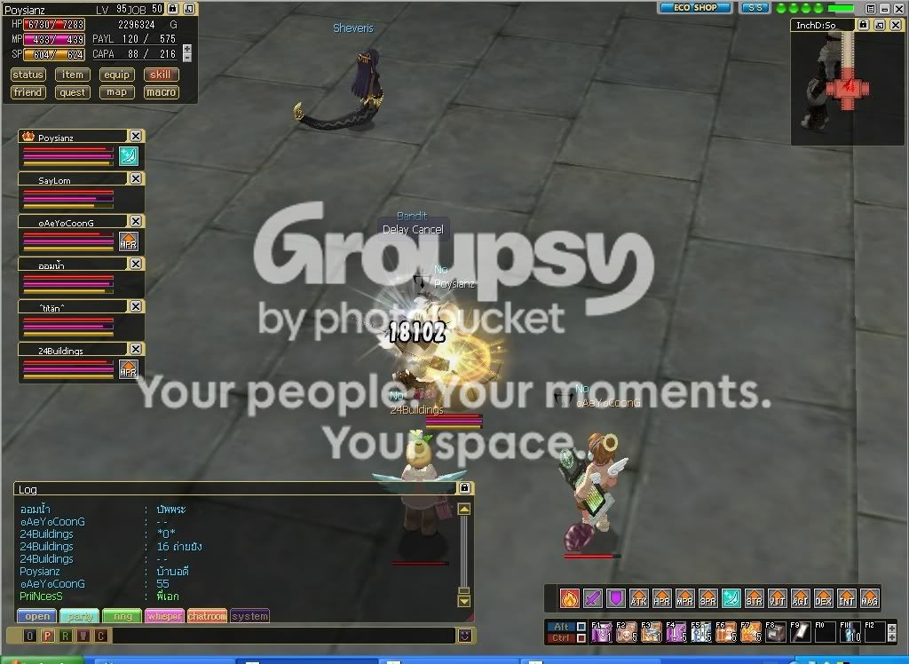

หน้า 160 จากทั้งหมด 281

โพสต์แล้ว:
พฤหัสฯ. 23 ต.ค. 2008 9:15 pmโดย ECO
Nimble เขียน:พี่เอก มีเรื่องวานให้ test นิดนุง :3
พี่โนแกคงเดาออกละ ไอ้นิมมาอีกละเรื่องนี้แหง
เนื่องจาก Spear Cyclone และ Darkness Of Night แทงอืดเป็ด
เลยอยากวานพี่เอกหรือท่านที่มีท่านี้แล้ว และ "มี Counter" (จะหา knight ที่ไหนมีได้มั่งฟระ?)
counter + SP/DoN แล้วจะทำให้สามารถตัด motion ของ SP/DoN ได้หรือไม่?
กด counter นำ แล้วกด SP/DoN ใส่ตัวที่คิดว่ามันจะตีสวนมา ไม่ยิงเวทย์สวนมาและมันไม่ตายในท่า SP/DoN ก่อน น่ะงิ :3
ไว้เดี๋ยวไปลองกับ IAI combo ต่อ ฮา พ้นสอบพรุ่งนี้ก่อนเหอะ
PS : ไม่ต้องถึงขั้นไป re skill นา รอ yamabuki / sumire buff ก็ได้มั้ง? (แล้วจะกดทันเรอะ?)
นิมมาลองกะพี่จิ แต่พี่ไม่ได้เอา Don มานะ Counter ก็ไม่มี
แถมรูป โชว์ความจ้อน :yoyo115:

มีเยอะกว่านี้นิดหน่อย แต่มุมไม่เท่ 555
เจ็บช้ำน้ำใจโดนเอเลลงสายรุ้ง ต้องมาลงกะโจร :yoyo100:
โพสต์แล้ว:
อาทิตย์ 26 ต.ค. 2008 12:16 pmโดย ECO
ขอถามหน่อยครับ คือตอนนี้ผมเป็นไนท์ 82 จะ83ละเหลือ 4เปอร์
อยากจะรีเป็นสายวิทตอนอัพอย่างไรบ้างหรือแล้วตอนนี้รีสกิลกับสเตตัส
ยังเป็นแบบเสียเงินในเกมอยู่หรือป่าวครับ ผมจะรีสเตตัสแล้วก็สกิลด้วยครับ
ตอนเป็นเฟรนเซอร์เปลี่ยนตอน 40 [เล่นคนเดียวมันลำบาก]อยากจะเปลี่ยนเป็นสายลากแล้ว
แล้ววิทstr ควรเท่าไรดี
เรปบนอ่ะทำไงถึงจะเทพได้ขนาดนั้น
โพสต์แล้ว:
อาทิตย์ 26 ต.ค. 2008 1:40 pmโดย ECO
bomb038 เขียน:ขอถามหน่อยครับ คือตอนนี้ผมเป็นไนท์ 82 จะ83ละเหลือ 4เปอร์
อยากจะรีเป็นสายวิทตอนอัพอย่างไรบ้างหรือแล้วตอนนี้รีสกิลกับสเตตัส
ยังเป็นแบบเสียเงินในเกมอยู่หรือป่าวครับ ผมจะรีสเตตัสแล้วก็สกิลด้วยครับ
ตอนเป็นเฟรนเซอร์เปลี่ยนตอน 40 [เล่นคนเดียวมันลำบาก]อยากจะเปลี่ยนเป็นสายลากแล้ว
แล้ววิทstr ควรเท่าไรดี
เรปบนอ่ะทำไงถึงจะเทพได้ขนาดนั้น
ไออัพสเตตัสรอผู้ชำนาญมาตอบนะ
ส่วนรีสกิล รีสเตตัส รีได้ฟรีครั้งเดียวครับ รีที่เมืองเหนือ ตรงกลางเมืองเข้าไปข้างใน
ถ้าไม่ใช่สายsu ต้องสิงเข้าไปครับถึงจะได้
แต่ครั้งต่อไปต้องซื้อจากแคช :yoyo100:
โพสต์แล้ว:
อาทิตย์ 26 ต.ค. 2008 2:30 pmโดย ECO
หอก+คริ กับ+พาว เอาแบบไหนดีอะ
โพสต์แล้ว:
อาทิตย์ 26 ต.ค. 2008 7:10 pmโดย ECO
EagleB เขียน:หอก+คริ กับ+พาว เอาแบบไหนดีอะ
เชียร์ให้รีแล้วเอาไป +M.Atk

นึกว่าเลิกไปแล้วนะเนี่ย ไม่เจอซะนาน
โพสต์แล้ว:
อาทิตย์ 26 ต.ค. 2008 7:59 pmโดย ECO
EagleB เขียน:หอก+คริ กับ+พาว เอาแบบไหนดีอะ
แล้วแต่สายAgi +Criก็ดี ส่วนVit,Strนี่ต้อง +Pow
แต่ถ้าสายMagต้อง +M.Atk :yoyo101:
โพสต์แล้ว:
อาทิตย์ 26 ต.ค. 2008 9:30 pmโดย ECO
แนะนำสายวิทลากหน่อยจิ เอาแบบ แทงแม่น ลงNVN ได้ด้วย
โพสต์แล้ว:
อาทิตย์ 26 ต.ค. 2008 10:58 pmโดย ECO
สายวิท ถ้าไม่มี Defense Stab ก็เหมือนขาดๆหน่อยนะ ถ้า NvN
สเตตัสก็ไม่มีไรมาก อัพตามที่คิดไว้เลยครับ ลองกดๆเวปคำนวณสเตตัสดู
โพสต์แล้ว:
อาทิตย์ 26 ต.ค. 2008 11:21 pmโดย ECO
Nekoi เขียน:มีหลายคำถามน่ะครับ
1.Skill Sword Mastery ของ Fencer นั้น เพิ่ม atk ให้ดาบประเภท Rapier ไหมครับ
2.Spear Strike2 มีผลกับดาบ Rapier จริงๆไหมครับ
3.มีสกิลอะไรบ้างของอาชีพสาย Fencer ที่สามารถใช้ร่วมกับดาบ Rapier ได้ครับ
ขอบคุณล่วงหน้าสำหรับคนที่มาตอบนะครับ
=w=
1.เพิ่ม
2.มี
3.ตามคำอธิบายสกิลในเกมส์แหละครับ ลองกดดู ถ้าเป็น Weapon เรเปียก็ใช้ได้ครับ
โพสต์แล้ว:
จันทร์ 27 ต.ค. 2008 2:55 pmโดย ECO
:yoyo106: สกิล Darkness of Night มันหาวิธีประยุกต์ใช้ไม่ไ่่ด้จริงๆหรอ?
ฮืออออ อนาถใจจริงๆ TvT อยากสวิชกลับไนท์ไปเอาสกิลแต่มันบ่จี๊!! :yoyo108:
โพสต์แล้ว:
จันทร์ 27 ต.ค. 2008 7:16 pmโดย ECO
ขอถามหน่อยจิมีทริกอ่ะไรไหมที่จะทำดาเมทได้เป็น 10000 ^ อ่ะ
โพสต์แล้ว:
จันทร์ 27 ต.ค. 2008 8:57 pmโดย ECO
สาบอันเดด กดแอสสิสก็ขึ้นหมื่นแล้วครับ :yoyo101:
โพสต์แล้ว:
อังคาร 28 ต.ค. 2008 1:30 pmโดย ECO
DoN ลองใช้ counter นำแล้วจิ้มดูอ๊ะ ไม่ได้ก็มะรู้แระ :3
(หาเหยื่อลอง :p)
โพสต์แล้ว:
อังคาร 28 ต.ค. 2008 1:52 pmโดย ECO
สาบอันเดด??
คืออะไรหรอคับ- -
โพสต์แล้ว:
อังคาร 28 ต.ค. 2008 2:23 pmโดย ECO
:yoyo100: ไม่ได้อัพ Counter ง่ะ พี่นิม ฮึกๆ :yoyo106:
แต่่ว่าบีลองทำแล้ว สาปอันเดท + กดแอสซิส ไหงมันเต็มที่ 8000 เองอ่ะเนี้ย เง้อออ :yoyo101: